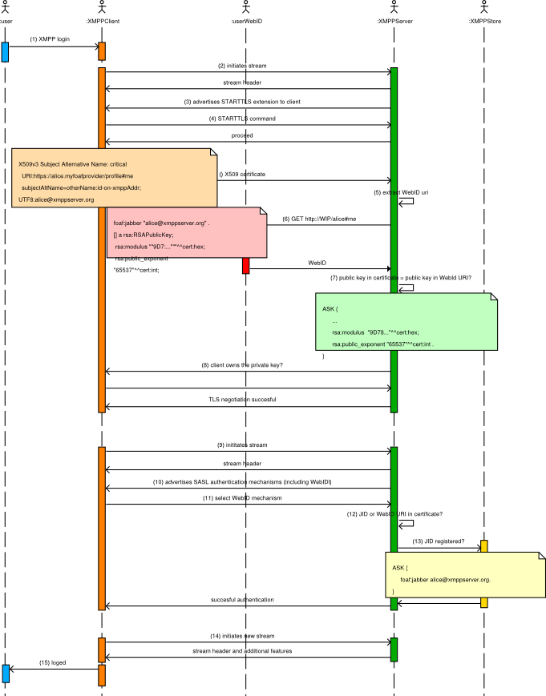

Federated Social Web Europe Conference, June 3rd to 5th 2011, Berlin
Benjamin Carrillo and Julia Anaya
Extensible Messaging and Presence Protocol (XMPP) is a natural choice for implementing a federated infrastructure for social online activities, since it already embodies a social, federated paradigm right in its core.
In the social web stack, several HTTP-based protocols have flourished to address the same problems as their XMPP counterparts. Apart from the existence of gateways between services—otherwise isomorphic on an abstract level—social graphs remain isolated on disjoint networks.
In this paper we discuss how the WebID protocol can be used to bridge these two worlds: it can provide a means of secure authentication using client certificates, and by using special ontologies, it can be a base layer for powerful access control rules to resources. We suggest a possible extension to existing entity authentication mechanisms, and explore how XMPP server implementations can benefit from adding WebID capabilities, offering new and exciting features to their existing users base.
XMPP is best known for its Instant Messaging (IM) capabilities, but it also has many other common social networking features: real-time communication, contacts and group managing, online presence, conference rooms, efficient publish-subscribe notifications and end-to-end connections for video and voice calls. Individuals can encrypt all their communications using common standards.
A variety of techniques have emerged to enable not only desktop clients, but also rich web applications, to benefit from XMPP's advantages as a backend. At the same time, a number of proposed extensions (Microblogging over XMPP, Activity Stream over XMPP) allow common social web actions to be modeled using XMPP as a transport layer.
One of the key freedoms that we envision for users of the social web is the ability to gain control over the management of their digital identities, moving away from systems that suffer from too centralized or hierarchical approaches. If Alice decides to change providers, her data (and metadata about access to her data) should be able to move seamlessly with her.
WebID is an authentication protocol that allows users to manage their own identities and data privacy. It uses X.509 certificates and SSL certificate exchange mechanism, and is compatible with existing SSL/TLS implementations. However, it does not rely on Certificate Authority (CA) chains for building trustness.
In WebID, the user profile is represented in a Semantic Web vocabulary, Friend-of-a-Friend (FOAF) that permits distributed hyperlinked social networks to exist.
WebID also provides a few additional features such as trust management via digital signatures, and free-form extensibility via Resource Description Framework (RDF).
It can also be used for authorization purposes in conjunction with other vocabularies and ontologies such as, Privacy Preference Ontology (PPO) [1] to provide a fine grained access control.
In the XMPP world a user must always be known to a server by the Jabber User Identifier (JID), before establishing a session, and therefore a preexisting XMPP account on a given server cannot just be used to be authenticated in other social networks or services (and vice-versa). The XMPP user profile and roster are also specific to the server with which the user is registered, thus remaining isolated from other profiles that the user may maintain with other providers
This isolation can change if we are able to use WebID for authentication. Statements contained in the WebID can draw a graph spreaded across the web without limits. We will see that we can either register an XMPP account to be associated with a WebID, or the XMPP server can provide a new WebID for the user, asking her if she wants to publish data from an existing WebID into the newly created one
We will also discuss the convenience of allowing a WebID-based single sign-on in some cases.
XMPP client-to-server authentication supports TLS and SASL mechanisms with certificates, via the SASL EXTERNAL mechanism. This mechanism is compatible as-is with the certificates used in WebID, as long as the JID is known and registered, when the certificate is created. One possible way to ensure this is for the WebID provider to offer the user the possibility of registering a Jabber user (using In-Band-Registration) right before the WebID X509 certificate is created, as discussed in step 11.1 of SASL EXTERNAL authentication. Note that the certificate also has the WebID URI in the subjectAltName object identifier, however, we are not using that in this case.
To demonstrate the viability of this first mechanism we have implemented a sample web application (XMPPWebID, certificate generation) that, as part of the WebID certificate creation process, allows an user to register with a Jabber service. The key pairs are generated in the HTTP browser, but this could also be done by an XMPP client in a similar fashion. Once the JID has been registered by the XMPP server, the WebID provider encodes the JID and the WebID URI (to be also valid for the case described in the SASL EXTERNAL WEBID section) in the user certificate. Now the user can install the certificate in her/his XMPP client and include in his/her WebID the RSA public key and the JID to authenticate against that XMPP server or other WebID-enabled HTTP services.
The X509 certificates in the XMPP SASL EXTERNAL are verified for a trusted Certification Authority (CA). This partial solution breaks the distributedness of the WebID trust building model, because it works only if the WebID certificate requests are signed by a CA in the trust chain of the certificates used by the XMPP server. In order to build a decentralized way to manage trust in the user authentication and authorization process, we propose a slight modification of the mechanism that does not rely on CA chain verification.
Step 11.3 of the cited XEP states:
If the certificate does not contain an XMPP address, then the server MAY attempt to determine if there is a registered account associated with the user, for example by performing an LDAP lookup based on the Common Name in the certificate; if such a JID mapping is successful and the mapped JID matches the authorization identity provided, then the server SHOULD allow authentication and authorization of that mapped JID.
JID mapping can be obtained by means of dereferencing WebID URI provided in the certificate. A CA is not needed since the server can check user modulus and exponent against presented certificate. All that is needed is a way for the server to remember which signature has first claimed a given JID (we could consider that the first time that an unknown pub key is claiming a given JID would be equivalent to an In-Band-Registration event.)
In this way, the authentication and authorization process in a future SASL EXTERNAL WEBID extension could be as follows:
Sticking to SASL EXTERNAL, the server would validate the certificate following a CA trust after the step 4. But this is not needed if we follow SASL-external-WebID, as shown in step 9.
The process is illustrated in Fig. 1. For clarity's sake, the notes only show part of the certificate, FOAF or SPARQL queries.

Fig. 1: XMPP WebID user authentication.
A notable difference between HTTP and XMPP services is how a client interacts with other nodes: a given XMPP account interacts with its "mother" server, which is the entry point to the Jabber federation. As described by SASL ANONYMOUS, an anonymous user registering with Jabber servers is an exception rather than the norm, used mostly for ease of access to multi-user chats (MUCs). Certain features, such as presence notifications, can be resource intensive, and hence special care has to be taken on public servers where anonymous authorization is allowed.
In a similar way to how we have described a WebID variant for the SASL-EXTERNAL case, a SASL-ANONYMOUS-WEBID might be defined. It may sound paradoxical, but the main difference is that the server creates a transient account that is destroyed after the session is closed. Still, we could be interested in allowing limited access to these partially-anonymous users. They would be as anonymous as the public info in their WebID profiles, that could be used to grant them temporary access if their properties match some particular resource privacy requirements. Aside from the MUCs case, users "roaming" between servers is not a scenario in XMPP, where server-to-server protocols render it useless.
From this angle, it makes no sense for the client to want to use a single certificate to authenticate against several servers (unless she specifically wants to keep accounts on different servers, of course). However, it is more natural to conceive it just the other way around: instead of considering accepting authentication from arbitrary WebIds, an XMPP server, by registering a component, can also act as a WebID provider. In the WebID diagram above, we just move WebID URIs to the realm of the XMPP server, which would expose it on an HTTP interface.
Let's examine three example applications built upon WebID authentication assumptions.
A plugin developed for widely deployed jabber servers is able to:
Profile or roster information can be exposed depending on the level of access granted by the user (defaulting some information as public, for instance, and limiting other information to WebID-authenticated users who belong to particular groups defined in the roster, or those who meet any arbitrary, semantically-defined rule).
We're working on a plugin for ejabberd that implements this as a proof-of-concept.
Similar to the case of SASL anonymous registration described in SASL ANONYMOUS, it could be interesting to define a set of rules that permit access to certain services based on dereferencing the WebID URI obtained during SASL-WEBID authentication and evaluating the information returned. Rules do not have to be stored in the server, nor constrained to whatever modelling logic the server implements.
Example rule 1: grant access to multi-user chat room to WebID users who belong to a certain mailing list / users of certain wiki (group defined in some predefined URI).
Example rule 2: grant access to WebID user if he's known by three or more users already in the room by using FOAF:knows predicate
Given that identity is checked using the described WebID extension, arbitrary rules can be set against semantic pointers to impose a layer of privacy: access to publish-subscribe nodes can be restricted to certain sets of friends, or between-peer query-routing schemes can be defined on this basis.
There is an experimental SPARQL-XMPP binding, that allows iq stanzas to carry SPARQL payloads. This opens a world of possibilites for personal RDF stores that use XMPP as a transport layer (jqbus, rdfbus). Rules can even be applied not only on an all-or-nothing basis, but SPARQL queries can also be introspected and matched against personal policies. A case of this could be: "answer queries, using my semantic desktop endpoint, to friends of the W3C group that ask about my bookmarks on semweb topics. Queries about my phone number, instead, will only be answered if coming from agents in my family group in my roster".
The properties of the presence items on XMPP make it very suitable to experiment with implementations of agents that act on behalf of the user while applying a predefined set of rules.
With small modifications, SASL-EXTERNAL authentication can be used for WebID authentication without relying on hierarchycal certificate chains. Very flexible rules can be defined for accessing XMPP services or user data.
XMPP servers are very suitable to act as WebID providers. Hopefully we will also see them bloom in this flavor, hybridizing with the rest of the social web ecosystem.
[1] Owen Sacco, Alexandre Passant. A Privacy Preference Ontology (PPO) for Linked Data. In Proceedings of the Linked Data on the Web Workshop (LDOW2011), CEUR-WS Workshop at 20th International World Wide Web Conference, Hyderabad, India, 2011. http://events.linkeddata.org/ldow2011/papers/ldow2011-paper01-sacco.pdf